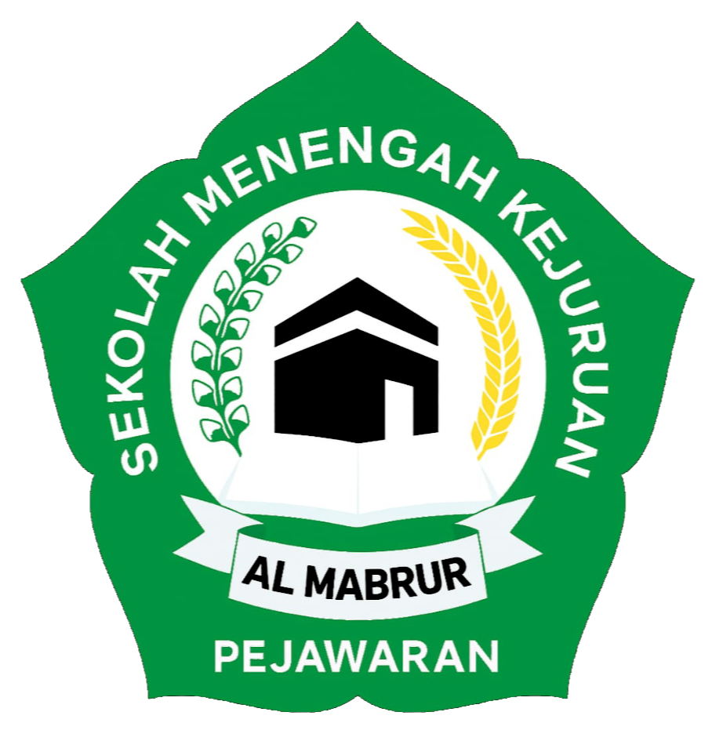

disususn untuk memenuhi tugas sekolah
smk almabrur pejawaran

Disusun oleh:
Nama: KHABIBBURROHMAN
Kelas: XI C
YAYASAN PERSAUDARAAN HAJI ALMABRUR (YPHA)
2025
| KATA PENGANTAR | i |
| DAFTAR ISI | ii |
| BAB I PENDAHULUAN | |
| 1.1. Latar Belakang | 1 |
| 1.2. Rumusan Masalah | 2 |
| 1.3. Tujuan | 3 |
| BAB II PEMBAHASAN | |
| 2.1. Pengertian Komputer | 1 |
| 2.2. Sejarah Komputer | 2 |
| 2.3. Jenis-Jenis Komputer | 3 |
| 2.4. Peran Komputer Dalam Kehidupan | 4 |
| 2.5. Dampak Positif dan Negatif | 5 |
| BAB III PENUTUP | |
| 3.1. Kesimpulan | 1 |
| 3.2. Saran | 2 |
| Daftar Pustaka | 1 |
Puji syukur kita panjatkan kehadiran tuhan yang maha esa, karena berkat Rahmat dan krunianya penulis dapat menyelesaikan makalah dengan judul komputer dan peranya dalam kehidupan sehari-hari.
Asslamu’alaikum wr. wb. Rasa syukur kami panjatkan kepada Allah Swt. Karena berkat rahmat dan hidayah-nya saya dapat menyusun makalah ini dengan baik dan selesai secara tepat waktu. Makalah ini kami beri judul “Komponen Utama Komputer”. Penyusunan makalah ini bertujuan untuk memenuhi tugas dari Bapak Husain. Selain itu, makalah ini juga bertujuan untuk memberikan tambahan wawasan bagi saya sebagai penulis dan bagi para pembaca. Khususnya dalam hal komponen-komponen komputer sebagai upaya agar para pelajar lebih luas mengetahui tentang komponenkomponen utama komputer bagi para siswa atau para pembaca. Saya selaku penulis tidak lupa untuk mengucapkan terima kasih kepada Bapak Husain selaku guru yang mengajar kami dan Bapak Haris selaku wali kelas kami. Tidak lupa bagi seluruh mahasiswa SMK Al-Mabrur yang saya banggakan. Terakhir, saya menyadari bahwa makalah ini masih belum sepenuhnya sempurna. Maka dari saya, memohon minta maaf jika ada kesalahan dalam penulisan saya, dan saya terbuka untuk menerima kritik-kritik dan saran yang dapat membangun kemampuan saya. Karena, saya membuat makalah ini secara individu tanpa bantuan dari mahasiswa yang lainnya. Semoga makalah ini bermanfaat bagi para mahasiswa lainnya ataupun para pembaca. Wassalamu’alaikum wr. wb.
Semoga makalah ini dapat bermanfaat bagi pembaca. September 2025 Penyusun
Istilah-istilah di Ketenagakerjaan Tenaga Kerja adalah setiap orang laki laki atau wanita yang sedang dalam dan/atau akan melakukan pekerjaan, baik di dalam maupun di luar hubungan kerja guna menghasilkan barang atau jasa untuk memenuhi kebutuhan masyarakat. Tingkat Produktivitas Tenaga Kerja merupakan nilai tambah Produk Domestik Bruto (PDB) dibagi dengan jumlah penduduk yang bekerja untuk menghasilkan nilai tambah tersebut. Jaminan Sosial Tenaga Kerja adalah suatu perlindungan bagi tenaga kerja dalam bentuk santuan berupa uang sebagai pengganti sebagian dari penghasilan yang hilang atau berkurang, dan pelayanan sebagai akibat peristiwa atau keadaan yang dialami oleh tenaga kerja berupa kecelakaan kerja, sakit, hamil, bersalin, hari tua, dan meninggal dunia.
Tujuan Menjelaskan pengertian komputer Mengetahui sejarah singkat perkembangan komputer Mengetahui jenis-jenis komputer. Menjelaskan peran komputer dalam kehidupan sehari-hari. Mengetahui dampak positif dan negative komputer.
Sebelum tahun 1970. Pembangunan diartikan sebagai proses yang menyebabkan pendapatan per kapita penduduk suatu masyarakat meningkat dalam jangka panjang dalam pengertian tersebut pembangunan semata-mata dipandang sebagai fenomena ekonomi sehinngga pembangunan yang dilaksanakan hanya mengedepankan pembangunan bidang ekonomi. Hasilnya memang terjadi pertumbuhan ekonomi yang tinggi namun tidak disertai dengan perbaikan taraf hidup sebagian besar masyarakat, justru tingkat kemiskinan semakin tinggi, jumlah pengangguran semakin besar dan utang luar negeri semakin membengkak. Pembangunan merupakan suatu proses multidimensional yang mencakup berbagai perubahan mendasar atas struktur social.
• Generasi Pertama (1940-an – 1950-an)
Komputer mulai digunakan dalam bidang akademik dan militer. Salah satu yang terkenal adalah Atanasoff-Berry Computer yang dibuat pada tahun 1937 untuk menyelesaikan sistem persamaan linear. Pada masa Perang Dunia II, komputer Colossus digunakan Inggris untuk memecahkan kode rahasia Jerman Nazi.Kemudian pada tahun 1946, lahirlah ENIAC (Electronic Numerical Integrator and Computer) yang dikenal sebagai komputer pertama untuk tujuan umum. Ukuran komputer ini sangat besar hingga memenuhi satu ruangan, dan menggunakan tabung vakum sebagai penyimpan data. Konon, saat pertama kali dinyalakan, seluruh kota Philadelphia mengalami mati listrik karena daya yang dibutuhkan sangat besar.
Pada tahun 1951, UNIVAC (Universal Automatic Computer) diperkenalkan ke publik sebagai komputer komersial pertama. Tidak lama kemudian, pada tahun 1953, perusahaan IBM masuk ke bisnis komputer dengan meluncurkan produk IBM 650 dan IBM 700. Pada masa ini juga mulai muncul bahasa pemrograman, sistem operasi, dan memori yang lebih baik.
Salah satu inovasi penting dari generasi ini adalah munculnya komputer mini, yang kemudian memengaruhi perkembangan komputer selanjutnya. NASA bahkan menggunakan komputer generasi ketiga untuk mendukung Program Apollo, seperti pada Apollo Guidance Computer yang membantu pengendalian misi luar angkasa.
Pada masa ini, perusahaan Digital Equipment Corporation (DEC) menjadi pesaing kuat IBM dengan produk komputer PDP dan VAX. Generasi ini juga melahirkan salah satu sistem operasi paling berpengaruh, yaitu Unix, yang kelak menjadi dasar banyak sistem operasi modern.
Dengan adanya mikroprosesor, ukuran komputer semakin kecil dan murah, sehingga lahirlah komputer pribadi (Personal Computer/PC) yang bisa digunakan oleh masyarakat umum. Dari sinilah berkembang komputer rumahan, komputer meja, hingga laptop dan ponsel pintar (smartphone).
Komputer tidak lagi hanya menjadi alat akademis atau militer, tetapi sudah menjadi bagian dari kehidupan sehari-hari manusia. Perkembangan smartphone bahkan memicu “perang paten” di antara perusahaan teknologi besar, menunjukkan betapa pentingnya perangkat ini dalam kehidupan modern.
Teknologi Komputer adalah salah satu hadiah paling cemerlang dalam hal ilmu pengetahuan. Komputer adalah perangkat listrik untuk kuat dan menganalisis informasi di dalamnya untuk menghitung atau dimaksudkan untuk mengendalikan mesin otomatis. Charles Babbage dikembangkan perangkat ini pertama di 1812 diikuti oleh George Boole pada tahun 1854, Howard dan Aitten pada tahun 1937, Dr. John Nouchly J. P Eckert pada tahun 1946. Komputer ini telah bernama peralatan era pertama. Hari ini dengan teknologi kecerdasan buatan kami memanfaatkan komputer generasi kelima. Setiap generasi baru dari sistem komputer telah menjadi lebih kecil, lebih ringan, lebih cepat dan lebih kuat daripada semakin cepat orang-orang. Sekarang komputer notebook ukuran seperti laptop cukup umum. Komputer sudah telah mendominasi teknologi sejak tahun 1970 dan sekarang telah masuk ke semua lapisan masyarakat dan mayoritas mayarakat modern telah mengetahui beberapa cara mudah belajar komputer
Menyusun program sangat penting untuk mengelola komputer. Pekerjaan ini diselesaikan oleh insinyur perangkat lunak. Pc program adalah daftar lengkap petunjuk yang menerima pc untuk memecahkan masalah. Ada banyak bahasa yang berbeda yang dapat Anda gunakan untuk program saya pc. BASIC, COBOL, FORTRAN, C, C++, JAVA dan terlihat dasar adalah beberapa dari mereka.
Tingkat akurasi, keandalan dan kejujuran adalah beberapa karakteristik dari komputer. Hal ini dapat melaksanakan instruksi lebih dari satu juta per detik tanpa melakukan kesalahan. Bisa melaksanakan perhitungan hanya dalam beberapa menit yang akan memerlukan kali jika dilakukan secara manual. Ini akan membantu kami dalam memecahkan masalah-masalah sulit yang banyak beberapa perhitungan. Komputer memiliki memori besar. Itu dapat menyimpan data dalam jumlah besar. Teknologi perangkat lunak telah melihat percepatan pengembangan dan perusahaan-perusahaan seperti Microsoft dan Infosys telah menetapkan diri sebagai pemimpin pasar, perintis ini revolusi dunia.
Di bawah umur 50 tahun komputer memiliki dipengaruhi hampir setiap bidang kegiatan. Banyak kegiatan rutin hari menjadi dilakukan oleh komputer. Pemanfaatan komputer telah mengurangi dokumen. Sekarang sebagian besar fungsi dilakukan secara langsung pada komputer. Lalu lintas di kota-kota besar dikontrol oleh sistem komputer. Otomatisasi di Bank dan Stasiun jalan rayap telah menawarkan bantuan kepada publilc staf atau semacamnya. Reservasi telah menjadi lebih efisien nyaman, berbagai jenis video game seperti catur kartu kredit juga dapat dimainkan pada sistem komputer.
Sambungan antar komputer di seluruh dunia, Internets merevolusi konsep dan membawa keluar dari bisnis. Audio visual dan akses ke kantor di seluruh dunia melalui jaringan menawarkan diberikan naik ke kantor digital. Satu dapat memiliki akses cepat ke informasi melalui internet. Ini benar-benar adalah Samudera pengetahuan untuk mendapatkan siswa. Ini adalah sebuah perpustakaan yang besar. Siswa yang mengejar program melalui pengaturan pendidikan jarak dapat mempelajari topik online. Internet adalah cara tercepat dan termurah untuk mempertimbangkan masuk di sebuah organisasi Asing, mengumpulkan informasi geografis setiap wilayah chatting dengan siapa pun di setiap sudut dunia atau mencari pasangan hidup hanya satu pilihan.
Otoritas pemerintah negara pemerintah pusat telah menempatkan fokus khusus pada pendidikan komputer di indonesia. Aplikasi komputer juga sedang diperluas ke arena hukum. Ruang Sidang tertinggi indonesia telah menjadi pengadilan 1 di negara untuk memasok e-mengisi kasus.
Komputerisasi telah menciptakan banyak karir bagi pakar DTP operator, pengembang, hardware dan software. Hotel ini menyediakan bukaan yang luar biasa untuk memukul jenis baru pengusaha merek.
Komputer sistem dapat digunakan sebagai mesin tik, ketika dilengkapi dengan telepon modem, dengan menggunakan komputer kita dapat chatting di seluruh dunia. Telekonferensi dan video Rapat juga tersedia. Internet kucing untuk tetap berhubungan mungkin keluarga kami teman-teman. Anda bisa mendapatkan informasi tentang setiap subjek yang dikenal manusia mulai dari peraturan pemerintah layanan perdagangan Festival, konferensi pasar informasi pendidikan dan masyarakat untuk politik nasional.
Komputer telah membuktikan kali f sebagai teman hamba Sains, teknologi dan industri. Komputer melalui internet membuka peluang bisnis. Komputerisasi telah dilakukan dalam bisnis, bank, penerbitan elektronik, teknik, inovatif merancang, fashion merancang dan sebagainya yang digunakan dalam kereta api maskapai, Layanan pertahanan, penelitian organisasi tempat semua Departemen percakapan, Meteorologi, teknologi medis, dll brooking stock. Dalam pertahanan mereka membantu radar dan rudal dan meluncurkan meroket. Mereka telah membuka jalan baru untuk membeli dan hiburan.
Telekomunikasi dan citra satelit adalah pc berbasis. Komputerisasi dapat melakukan peran penting di daerah pedesaan di studi biji, tanaman penyakit manajemen dan perangkat lunak sektor pemakaman pembangunan.
Komputer juga memiliki yang suram. Teknologi disalahgunakan untuk melakukan penipuan keuangan untuk hacking untuk memberikan ancaman melalui email yang berkaitan dengan mengirim pesan vulgar yang dimaksudkan untuk terlibat dalam anti tindakan nasional dan bahkan untuk memeras orang. Chat Room yang digunakan untuk memanjakan diri dalam diskusi tidak senonoh. Situs web tertentu menawarkan materi pornografi yang sangat merugikan bagi anak-anak. Untuk memeriksa semua kejahatan tersebut pemerintah telah membentuk jaringan yang terpisah dari itu ahli dan lunak khusus yang dikembangkan untuk melacak varietas baru berpendidikan penjahat. Tapi keuntungan dan pentingnya komputer melebihi kerugian. Melalui komputerisasi dunia telah menjadi sebuah desa global hari ini.
Berdasarkan pemaparan diatas maka dapat disimpulkan bahwa Pertumbuhan ekonomi memiliki kaitan yang erat dengan pembangunan politik yang dijalankan oleh suatu negara. Kebijakan pembangunan membawa dampak pada pertumbuhan ekonomi suatu negara, namun demikian pertumbuhan ekonomi semata tidak dapat dijadikan ukuran keberhasilan sebuah pembangunan. Pertumbuhan ekonomi pada negara terbelakang dapat dijelaskan sebagai suatu bentuk ketergantungan dengan negara maju. Wujud ketergantungan tersebut kini dalam bentuk kesatuan ekonomi kapitalis dunia. Pembangunan politik negara terbelakang memiliki peran dalam menentukan pertumbuhan ekonomi.
Semoga dengan dibuatnya makalah ini dapat bermanfaat bagi para pembacanya. Berjuanglah demi hidup yang lebih baik, tingkatkan prestasimu dan antusiaslah dalam bidang ekonomi karena sangat tergantung sekali negara ini kepada struktur dan system ekonomi yang ada.